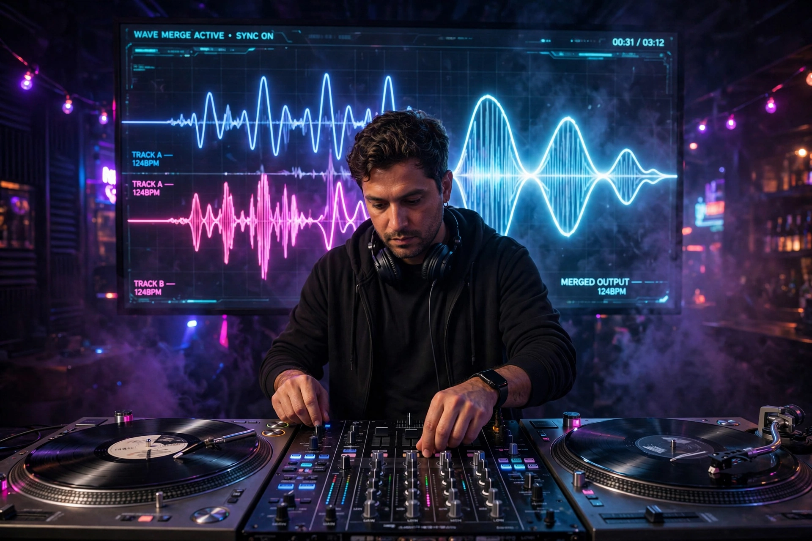

Mashup (music)
A mashup (also mesh, mash up, mash-up, blend, bastard pop or bootleg) is a creative work, usually a song, created by blending two or more pre-recorded songs, typically by superimposing the vocal track of one song seamlessly over the instrumental track of another and changing the tempo and key where necessary. Such works are considered a transformation of the original content and, though largely unlicensed, are protected by the fair use doctrine of US copyright law in many cases.

History
The practice has precedents in musique concrète, the novelty medleys of Dickie Goodman in the 1950s, and hip-hop sampling and turntablism. Belgian duo Soulwax, recording as 2 Many DJs, helped popularise the form around 2001 with mixes such as "Freak Like Me", which combined the Sugababes' vocal with Gary Numan's "Are 'Friends' Electric?" and was later issued officially. Danger Mouse's The Grey Album (2004), which mixed Jay-Z's The Black Album with The Beatles' White Album, became a landmark of the genre and a flashpoint in copyright debates after EMI issued a cease-and-desist; supporters responded with the "Grey Tuesday" online protest.
Notable artists and works
Artists associated with mashups include Girl Talk (Gregg Gillis), whose sample-dense albums such as Feed the Animals (2008) were released under Creative Commons licences; the Kleptones; Norwegian recycleradio producer; and later pop producers. The television series Glee and games such as DJ Hero brought the form to mainstream audiences, and some mashups have charted officially, such as "Every Breath You Take" blends and authorised remixes.
Legal status
Because mashups combine copyrighted recordings and compositions, most are distributed unofficially as bootlegs. Defenders argue they are transformative fair use; rights holders frequently disagree, and availability often depends on informal tolerance or on platforms' licensing arrangements.
See also
References
Gaylor, Brett (2008). RiP!: A Remix Manifesto (film).
McLeod, Kembrew, & DiCola, Peter (2011). Creative License: The Law and Culture of Digital Sampling. Duke University Press.